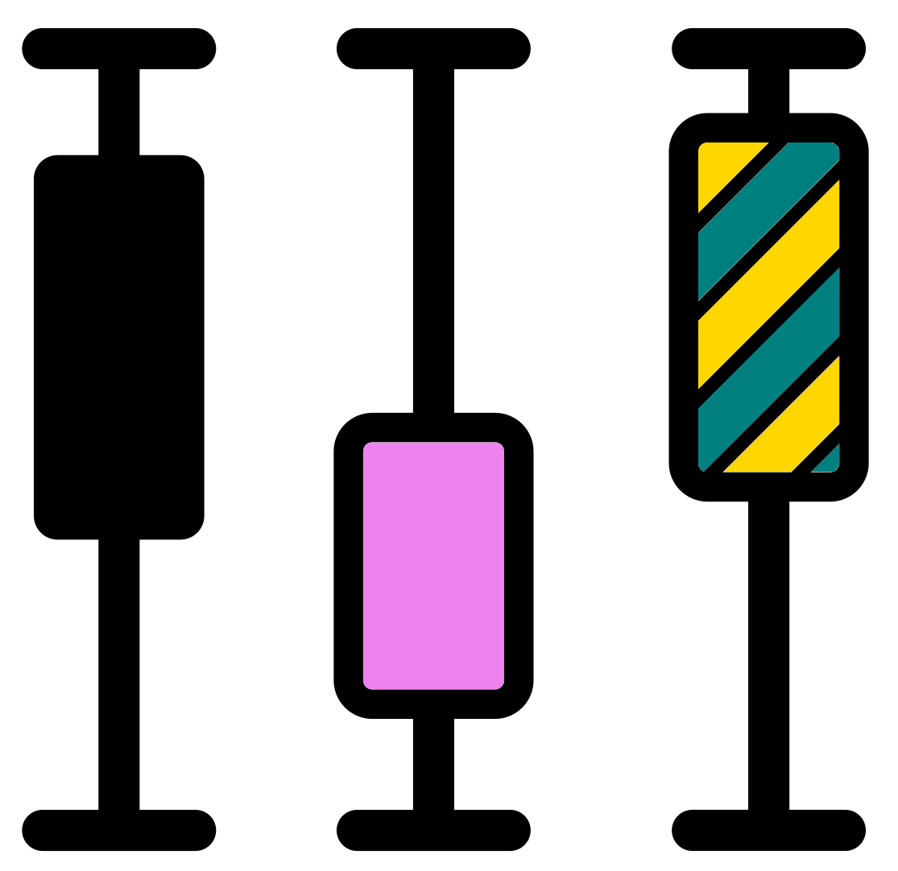

Chapter 9 Minimum read depth
It is good to remove samples with a very low read depth (number of sequencing reads). However, it is not trivial to determine what an appropriate read depth is. This value will vary from study to study. Normally, for 16S data, a depth of at least 20K per sample is suggested. However, this is the general consensus for human microbiome data.
In this chapter we will:
- Cover a brief intro to considertions of what is an acceptable minimum depth for your dataset.
- Reinvestigate our sample depths with a previously created histogram.
- View the depth ranges of different sample groups (site & media) with box plots.
- Create a rarefaction curve to assess if the depth of our samples have captured a good amount of biodiversity.
- Demonstrate how to filter samples by depth.
9.1 Considerations
There are 3 main considerations to take into account for what is an appropriate depth for your dataset.
- The biodiversity of your samples.
- If your sample is very biodiverse, such as the human gut microbiome, you will need a good depth (>20K per sample).
- If your sample is less biodiverse, such as many geological environments or skin, then you will not need as much read depth.
- Rarefaction curves are a good method to determine if your samples have enough depth. We will look at this in this chapter.
- The biomass of your samples.
- Some environments are hard to extract DNA from.
- If this is the case for you, then people will hopefully accept that this is an unfortunate reality of life and you will use what you can.
- However, be careful of your conclusions, if you think your data doesn't have as much as it could do not make very definitive detailed claims.
- Read depth of sample groups.
- It may be possible that a few samples have a much lower depth than the rest and so you may think to remove them.
- However, these may all come from the same sample group and so you have lost all information of one group.
- For instance, you may be comparing different geological surfaces and your rock samples have much lower read depths than the various soil samples.
- For comparisons including the lower depth sample group (e.g. rock samples) you will need to retrain the lower depth sample.
That is a brief overview of that topic. If you are interested in more I suggest you look at papers where they have studied an environment similar to yours.
9.2 Minimum read depth section title
In the next section of our jupyter-notebook we will investigate what the minimum read depth should be and remove sample below this.
Create a new "Markdown" cell and add the following 2nd level header.
## Minimum read depth9.3 Read depth vector and histogram

We have already created a vector and histogram of the read depths across our samples. Scroll up your notebook to view these and answer the following MCQ:
- What is the approximate read depth range of our dataset?
This is a good first step but what if we want to know how the read depths vary between sample groups?
9.4 Sample depth boxplot

We are going to use ggplot2 to create a couple boxplots to show the sequencing depth ranges of the different sample groups (Site & Media).
9.4.1 Creating data frame for boxplots
First, we need to create an object containing our sample names, Site & Media information, and the depth.
We will use this object to produce our boxplots.
Thankfully the metadata in our phyloseq object contains all this information except the depth.
In a new cell write and run the below code. This will extract the sample data (metadata) to a new object and display the top 6 rows fo this new object.
#Extract sample data as a separate R object
abundance_metadf <- phyloseq::sample_data(pseq)
#View top 6 rows of metadata data frame
head(abundance_metadf)The 2 new functions above are:
phyloseq::sample_data(): Extracts the sample data (metadata) data frame from aphyloseqobject.head(): Returns the first 6 parts of an R object by default.- It can be used for a vector, matrix, table, data frame, or function.
- In the case of a data frame it returns the first 6 rows.
We need to add the depth information to our new data frame.
We have extracted this previously into an object called sample_depths.
However, before adding it we want to check it has the same order of samples as the rows in abundance_metadf.
Write and run the below script in the same cell. The code uses head() to view the first 6 elements of sample_depths and the row names of abundance_metadf. Then the function idnetical() is used to see if they are identical (TRUE) or not (FALSE).
#Check if our vector of sample_depths has the same order as our metadata rows
head(names(sample_depths))
head(row.names(abundance_metadf))
identical(names(sample_depths),row.names(abundance_metadf))The order of samples is identical so we can add the depth information to abundance_metadf. Carry this out in the same cell with the code below.
#Add sample depths to metadata data frame
abundance_metadf[,"depth"] <- sample_depths
#View top 6 rows of edited metadata dataframe
head(abundance_metadf)Great! We will next use this data frame to create 2 boxplots.
9.4.2 Depth boxplots

We are going to create 2 boxplots with ggplot2.
We won't go into too much detail on how the code works here, instead learning more later in this book.
The code below creates a ggplot2 boxplot. We carry this out with 2 functions:
ggplot(): This creates aggplot2object, storing the information and aesthetics.- The first option is the data we want to use for plotting (
abundance_metadf). - The second option is the aesthetics (
aes()) to plot. In this case we want the depth column to be plotted on the y-axis (y=depth) and the site column to be plotted on the x-axis (x=site).
- The first option is the data we want to use for plotting (
+: We need to have a+at the end of theggplot()function to add the next component of the plot.geom_boxplot(): This adds a layer to ourggplot2object. In this case it converts theggplotobject, which is just information, into a boxplot.
Write and run the following code in a new cell:
#Create ggplot2 boxplot of depth by size
ggplot2::ggplot(abundance_metadf, aes=(y=depth, x=site)) +
ggplot2::geom_boxplot()- Which site has the highest median depth (middle line of boxplot)?
We will use the same code to plot the depth by media.
You can copy and paste the code changing the x aesthetic to media (x=media).
Carry this out in the same cell and run the code.
#Create ggplot2 boxplot of depth by size
ggplot2::ggplot(abundance_metadf, aes=(y=depth, x=media)) +
ggplot2::geom_boxplot()- Which media has the lowest median depth (middle line of boxplot)?
From the boxplots we can see there is no drastic difference between the depths of the different sample groups. We will therefore continue and make some rarefaction curves to further assess the depth of our samples.
For more resources on ggplot2 please see the appendix of this book.
9.5 Rarefaction curve

Our read depths appear a bit low. However, this might be fine for our dataset since we are use surface water samples rather than human gut microbiome samples. Let's see how our samples look with a rarefaction curve.
#Sample with too few samples? #In your analysis you may have a sample with too few reads #All our samples are fine for a tutorial case but let us say we only wanted to #keep samples with >11k reads #We could remove samples with the following code pseq_min11K <- phyloseq::subset_samples(pseq, reads_sample > 11000) microbiome::summarize_phyloseq(pseq_min11K) microbiome::readcount(pseq_min11K)
#We won't be using this as we are happy with our sample numbers #Let us therefore remove this sample subsetted variable rm(pseq_min11K)